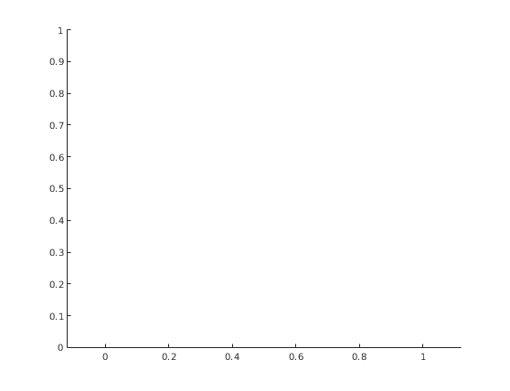
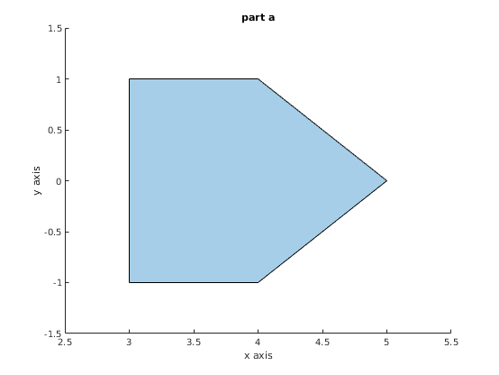
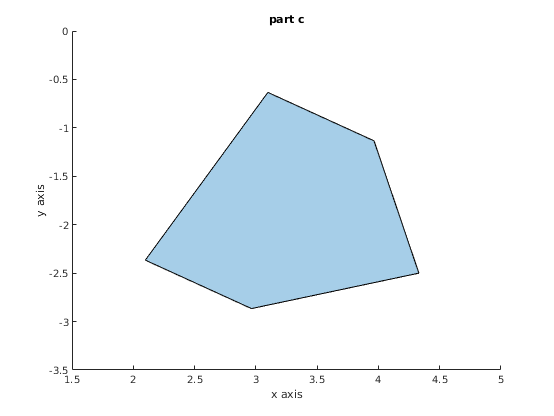
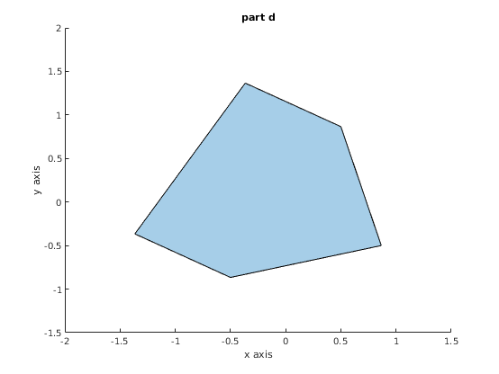

Contents
axis equal
 Question 2
rot_y = [sqrt(3)/2, 0 , 1/2, 0;
0,1,0,0;
-1/2,0,sqrt(3)/2,0;
0,0,0,1];
rot_x = [1,0,0,0;
0,0,-1,0;
0,1,0,0;
0,0,0,1];
rot_z = eye(4);
R = rot_y * rot_x * rot_z
R =
0.8660 0.5000 0 0
0 0 -1.0000 0
-0.5000 0.8660 0 0
0 0 0 1.0000
Question 3
p = [1,0;0,1;-1,1;-1,-1;0,-1]' A = [1,0,4;0,1,0;0,0,1;]; B = [0.866 ,0.5, 0;-0.5, 0.866,0;0,0,1;]; % part a p_a = apply_transformation(p,A); pgon = polyshape(p_a(1,:),p_a(2,:)); figure(); plot(pgon); title('part a') xlabel('x axis') ylabel('y axis') %part b transformation = A*B; p_b = apply_transformation(p,transformation); pgon = polyshape(p_b(1,:),p_b(2,:)); figure(); plot(pgon); title('part b') xlabel('x axis') ylabel('y axis') %part c transformation = B*A; p_c = apply_transformation(p,transformation); pgon = polyshape(p_c(1,:),p_c(2,:)); figure(); plot(pgon); title('part c') xlabel('x axis') ylabel('y axis') %part d transformation = B; p_d = apply_transformation(p,transformation); pgon = polyshape(p_d(1,:),p_d(2,:)); figure(); plot(pgon); title('part d') xlabel('x axis') ylabel('y axis') %part e transformation = A*B; p_e = apply_transformation(p,transformation); pgon = polyshape(p_e(1,:),p_e(2,:)); figure(); plot(pgon); title('part e') xlabel('x axis') ylabel('y axis') %part f transformation = B*A; p_f = apply_transformation(p,transformation); pgon = polyshape(p_f(1,:),p_f(2,:)); figure(); plot(pgon); title('part f') xlabel('x axis') ylabel('y axis')
p =
1 0 -1 -1 0
0 1 1 -1 -1
   Question 6
syms c80 s80 s10.5 c10.5
tranz1 = eye(4); tranz1(3,4) = 6; rotx = [1,0,0,0;0,cosd(80),-sind(80),0;0,sind(80),cosd(80),0;0,0,0,1]; roty = [cosd(-10.5),0,sind(-10.5),0;0,1,0,0;-sind(-10.5),0,cosd(-10.5),0;0,0,0,1]; tranz2 = eye(4); tranz2(3,4) = -6; Hp_g = tranz1 * rotx * roty*tranz2
Hp_g =
0.9833 0 -0.1822 1.0934
-0.1795 0.1736 -0.9683 5.8099
0.0316 0.9848 0.1707 4.9756
0 0 0 1.0000
helper function
function [output_p] = apply_transformation(p,matrix) output_p=matrix(1:2,1:2)*p+matrix(1:2,3); end